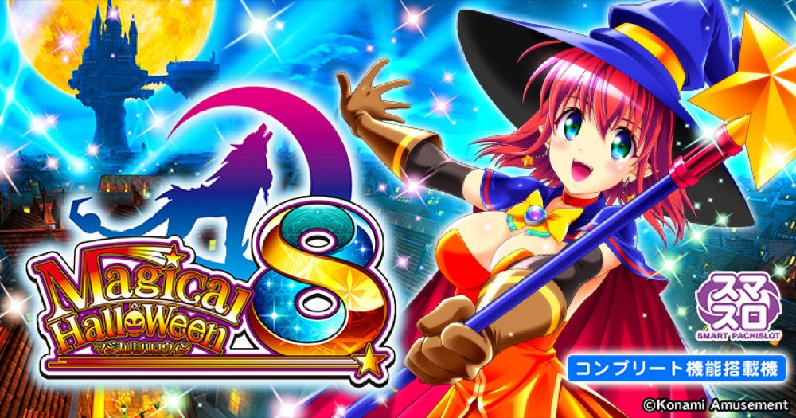

マジカルハロウィン8
ボーナスとカボチャンスを重ねるA＋ARTを設定ランダムで体験。
- 導入
- 2023年12月
- メーカー
- コナミアミューズメント
- 分類
- パチスロ
主要スペック
人気A＋ART機。ボーナス、カボチャンス、キングカボチャンス、悪カボチャンスのストック連を簡易体験できます。
- 設定1 ART初当り約1/352.2
- 約34.3G/50枚・純増約1.0枚/G
- 設定1〜6ランダム
マジカルハロウィン8の見どころと計算条件
人気A＋ART機。ボーナス、カボチャンス、キングカボチャンス、悪カボチャンスのストック連を簡易体験できます。
マジハロ8を数字で早分かり
ボーナスからカボチャンス、スーパーカボチャンスまでの流れと、設定ごとの結果差を固定レートで比較できます。
A＋ARTの二つの初当り
ボーナス合算とART初当りを設定別に使い、ボーナスからカボチャンスへつながる流れを簡易化します。
設定1〜6は均等抽選し、結果まで伏せます。
ストック連を段階で表現
キングカボチャンス、悪カボチャンス、スーパーカボチャンスを特化・上位段階として扱います。
内部モード、全ボーナス、ストック個数は完全再現しない娯楽用モデルです。
平均Gと投資目安の計算
掲載するカボチャンス初当り約1/352.2は設定1基準です。当サイトでは50枚あたり34.3G、1,000円46枚貸しの固定条件から、設定1基準の平均投資目安を約11,200円と計算します。
シミュレーターでは設定1〜6を均等抽選します。設定1〜6で公開されている初当り値を個別に使います。公開されていない特化ゾーン・上位到達率の設定差は加えません。 換金は5.2枚交換で固定し、結果とランキングに設定を表示します。
シミュレーション結果の見方
当るまでボーナス・カボチャンスまでのゲーム数
設定設定1・2・3・4・5・6から抽選された今回の設定
上位到達悪カボチャンスとスーパーカボチャンスへの到達
最終収支差枚と5.2枚交換の収支目安
結果は自動で「マイ記録」に保存され、同じ機種を何回試したか、最高収支、勝率をあとから確認できます。
簡易シミュレーターについて
ボーナス・カボチャンス・スーパーカボチャンスの流れを固定条件で体験できます。JavaScriptを有効にすると、この位置にシミュレーター、演出、マイ記録、機種別ランキングが表示されます。
結果は娯楽・確率理解のための参考表示です。金銭的価値や交換価値はなく、実際の勝敗や収支を保証しません。18歳未満の方の利用はお控えください。
マジハロ8のよくある質問
マジハロ8はどんな台？
人気A＋ART機。 設定1 ART初当り約1/352.2が主な確認ポイントです。
マジハロ8の平均投資目安は？
設定1基準のカボチャンス初当り約1/352.2と、50枚あたり34.3G・46枚貸しの固定条件から、平均11,200円を目安として表示します。実際の設定や遊技状況で結果は変わります。
設定とゲームの流れはどう抽選する？
開始時に設定1・2・3・4・5・6から1つを均等抽選し、ボーナス、カボチャンス、悪カボチャンス、スーパーカボチャンスの順で到達を判定します。設定は最終結果とランキングに表示します。
収支はどう計算する？
1,000円46枚貸し・5.2枚交換の固定条件で投資、換金、収支目安を計算します。実店舗の再プレイ、持ちメダル、端数処理は含みません。